-
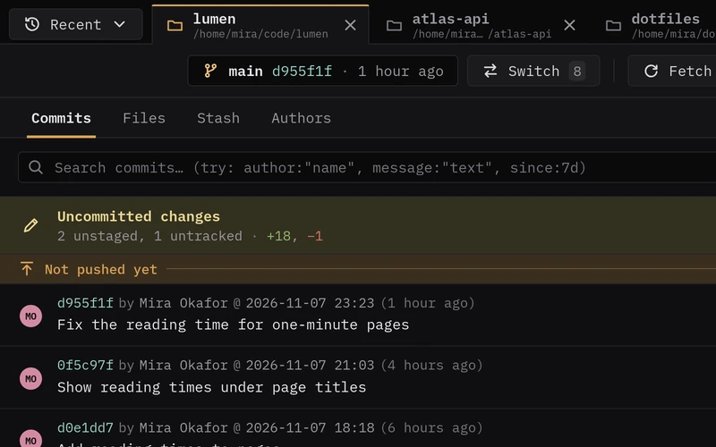
History
Commits newest first, with the ones not pushed yet marked and uncommitted changes on top. Every repository opens in a tab of its own.
-
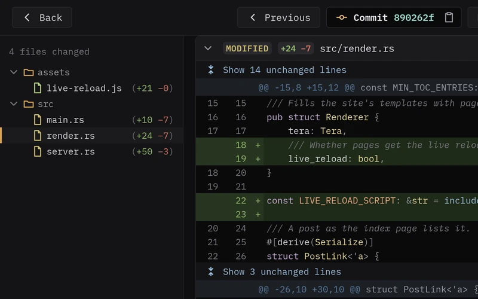
Diffs
Syntax-highlighted diffs that mark the words that changed, with a tree of the changed files and hidden lines a click away.
-
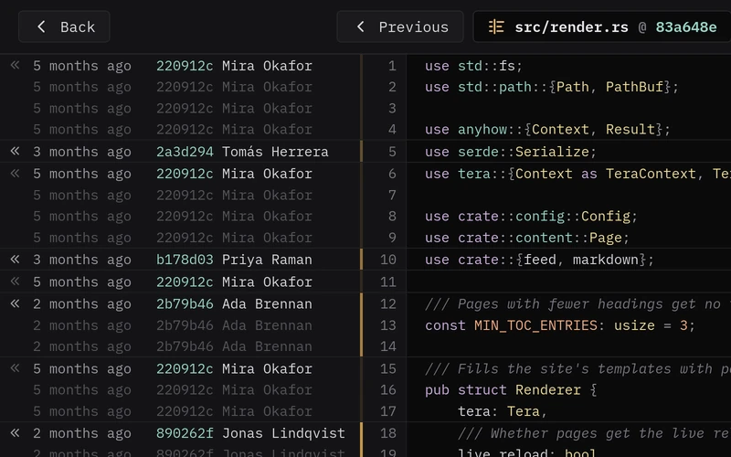
Blame
See the commit that last changed each line, following renames, and step back to the blame from before any change.
-
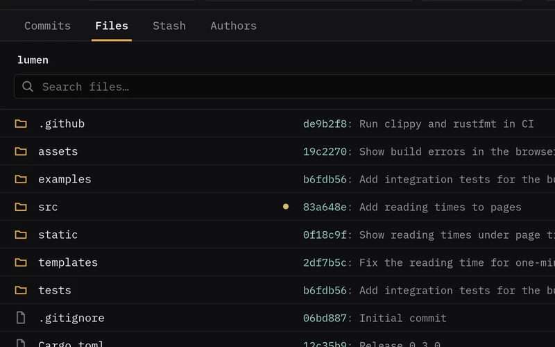
Files
Browse the repository with the last commit that changed each file, then open a file, its history or its blame.
-
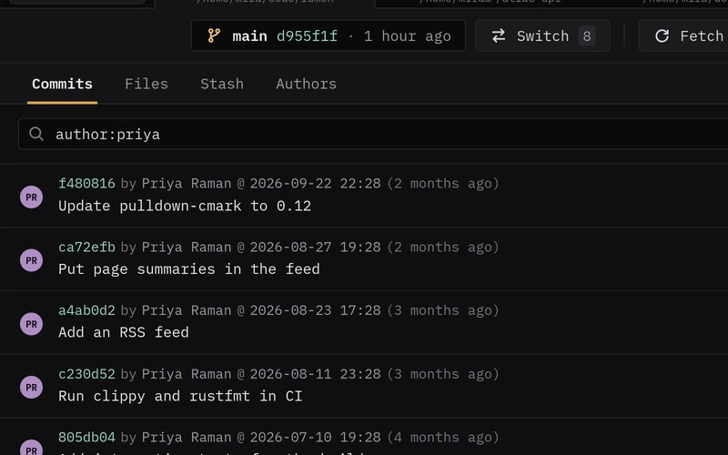
Search
Find commits by text, or narrow them down with
author:,message:,file:andsince:. -
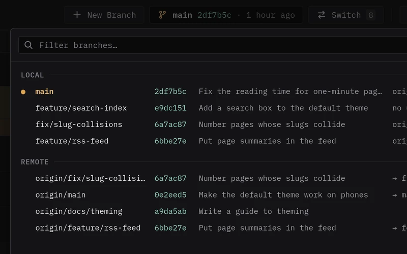
Branches
Switch branches like
git checkout: changes that don't conflict carry over, and fetch, pull and push are one click away. -
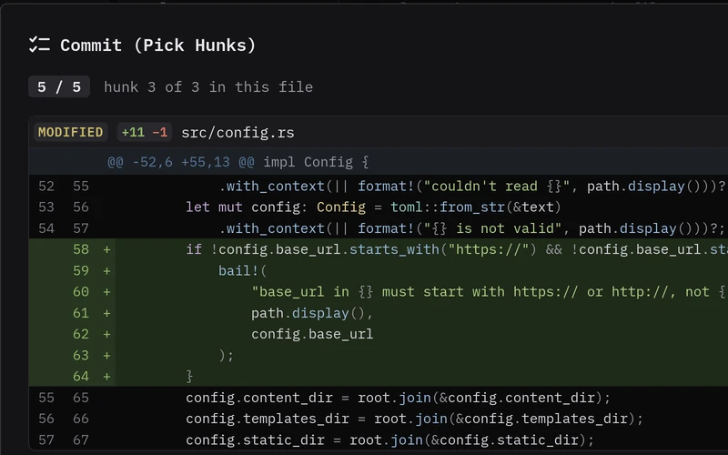
Pick hunks
Commit whole files, or go through the changes hunk by hunk as with
git add --patch, using the Y, N and Q keys. -
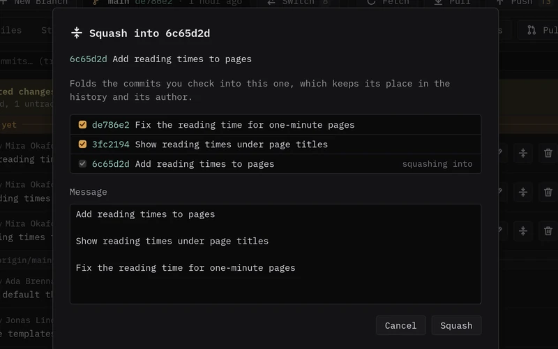
Reword, squash and drop
Tidy up unpushed commits as
git rebase -iwould. If any commit would conflict, nothing changes. -
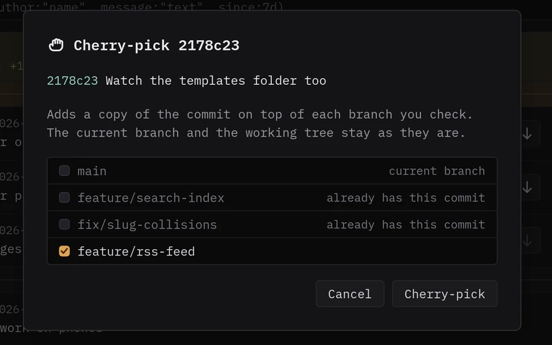
Cherry-pick and revert
Copy commits onto other local branches without checking them out, or revert them. If any branch conflicts, none changes.
-
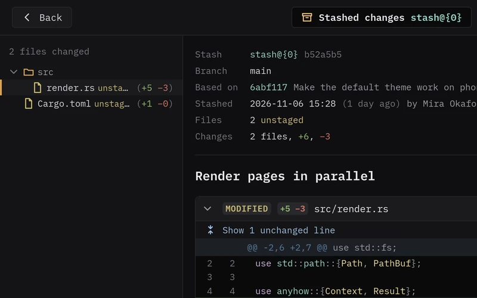
Stashes
Read each stash as a diff, then apply, pop or drop it. A stash is only applied when it applies cleanly.
-
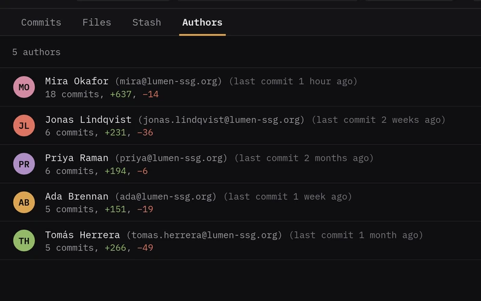
Authors
Everyone who worked on the branch, with their commits, the lines they added and removed, and when they were last active.
-
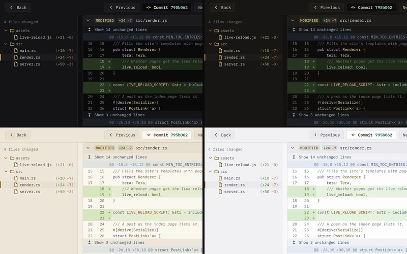
Themes
Dark (Black), Dark (Brown), Light (Beige) and Light (White), applied as soon as you choose one.